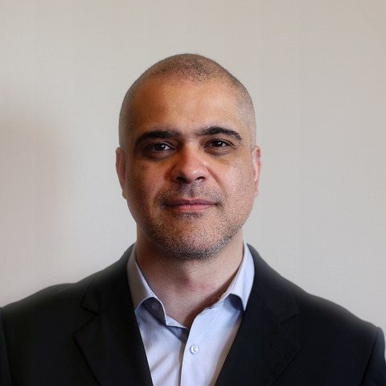
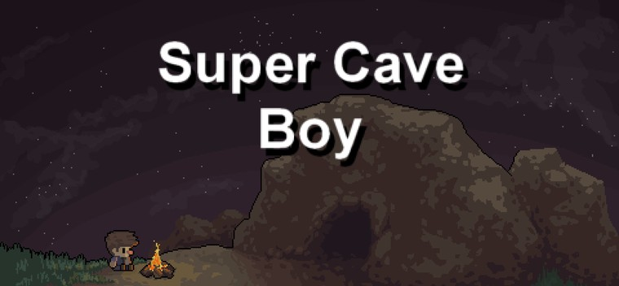

Program Manager & Technical Program Manager — 15+ anos coordenando programas técnicos em telecom e infraestrutura crítica.
→ aberto a Europa, APAC e Austrália · EU Blue Card
Cisco Systems · Curitiba, Brasil
Coordenação de programa técnico para clientes de telecom — backbone IP, DWDM, automação NSO. Contribuição em framework de governança de SLA e atuação técnica/gerencial no upgrade da plataforma Cisco UCCE para a TIM Brasil.
Cisco Systems · Rio de Janeiro, Brasil — Cliente: TIM
Principal ponto de contato entre cliente e engenharia Cisco na evolução do core PCRF/EPC. Coordenação de QoS, regras de tarifação e integrações Diameter, com apoio ao calendário de releases e ao monitoramento de conformidade de SLA.
Cisco Systems · Rio de Janeiro, Brasil
Coordenação de ciclos de teste funcionais, de regressão e integração para um programa de evolução da plataforma PCRF, incluindo gestão de validação de patches e prontidão para produção.
Comitê Organizador Rio 2016
Coordenação de operações de TI para um evento de prazo fixo e transmissão global, tolerância zero a indisponibilidade — monitoramento de SLA, cronogramas e alinhamento de stakeholders técnicos e não técnicos de múltiplos países.
Sonda IT · Rio de Janeiro, Brasil — Clientes: VALE, Oi
Gestão de programas de infraestrutura para grandes clientes corporativos, cobrindo escopo, cronograma e performance de SLA em frentes de trabalho simultâneas, com relatórios executivos para os patrocinadores.
Accenture · Rio de Janeiro, Brasil
Liderança de projetos técnicos de médio e longo prazo até a implantação em produção, coordenando equipes internas e fornecedores externos, incluindo cronogramas e programas de UAT.

Super Cave Boy
Plataforma em pixel art feito no GameMaker. Disponível no itch.io (acesso restrito, mediante link).
Baixar no itch.io